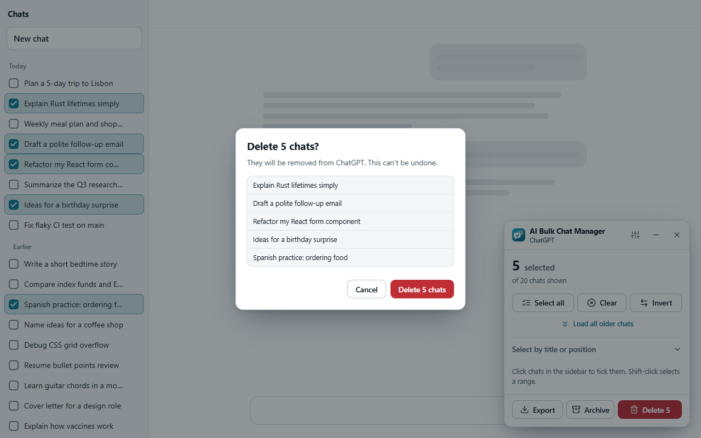
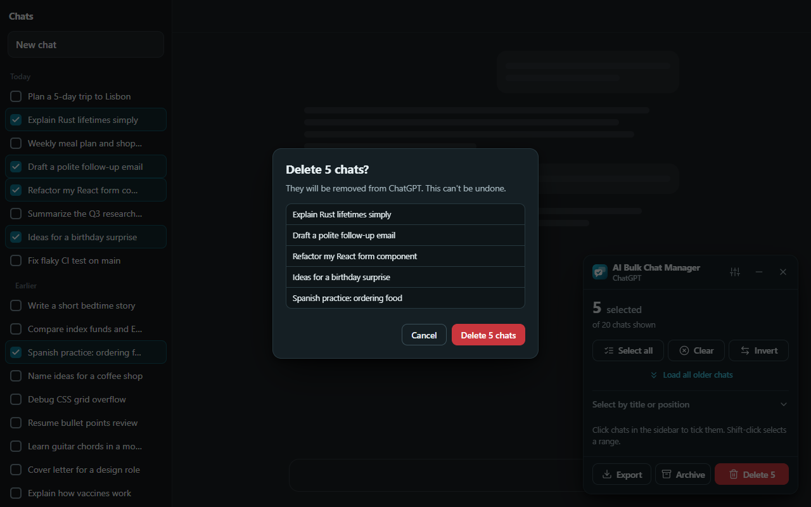

A panel inside the page
It stays open while you click in the sidebar and shows a live count. You can drag it, minimize it or close it.
Browser extension · User guide
AI Bulk Chat Manager puts a checkbox next to every chat in the sidebar of ChatGPT, Claude, Gemini and Grok. Tick what you want gone, then delete, archive or export it all from one small panel.
Free and open source (MIT). No account, no server, no analytics. Chrome, Edge and Firefox.


01 / Quick start
The whole idea fits in three steps. The quick start walks through them with screenshots.
Open ChatGPT, Claude, Gemini or Grok. Click the toolbar icon and choose Start selecting chats, or press Alt+Shift+B.
Click chats in the sidebar. Use Select all, a title filter, the oldest N, or Shift-click for a range.
Press Export to save a list first, Archive (ChatGPT only) or Delete. Check the list in the confirmation, then confirm.
02 / Features
Built for people with hundreds of old chats and no patience for the three-dot menu.
It stays open while you click in the sidebar and shows a live count. You can drag it, minimize it or close it.
Click, Shift-click ranges, Select all, Invert, by title text, the oldest N, and Load all older chats to reach your whole history.
A dialog lists exactly what will change and puts focus on Cancel. Big deletes need an extra tick.
Fast mode asks the site directly. If that fails, or you turn it off, the extension clicks through the site’s own menus.
Progress, a Stop button and a summary. Chats that fail stay selected with the reason, so you can retry.
Save the titles and links of the selected chats as JSON, CSV or Markdown before you delete anything.
It runs in your browser and sends nothing to its author. It reads the chat list, never your conversations.
Light and dark themes, four accent colors, 11 languages and right-to-left layouts.
03 / Supported sites
These sites change their pages without notice, so an action can stop working until the extension is updated. See Limits.
| Site | Delete | Archive | Export |
|---|---|---|---|
| ChatGPT (chatgpt.com) | Yes | Yes | Yes |
| Claude (claude.ai) | Yes | No | Yes |
| Gemini (gemini.google.com) | Yes | No | Yes |
| Grok (grok.com) | Yes | No | Yes |


04 / The guides
Short pages, one topic each. See all guides.
Install the extension, tick a few chats, export a list and delete or archive them. About five minutes.
Install AI Bulk Chat Manager on Chrome, Edge or Firefox, or load it from source. Includes the first-run tip for tabs that were already open.
Start selecting, tick chats with clicks, Shift-click ranges, Select all, Invert, title filter, Oldest N, and Load all older chats.
The confirmation dialog, fast mode and page menus, progress, Stop, results, Retry failed and Copy report.
Save the titles and links of the selected chats as JSON, CSV or Markdown. What the file contains and where it goes.
Every option with its default: language, theme, accent, fast mode, checkboxes as you scroll, confirmation threshold, launcher, shortcut, reset and diagnostics.
05 / Trust and help
What it can see, what it cannot do, and what to do when something goes wrong.
What the extension reads, stores and sends (nothing leaves your device), and why it needs each permission.
Fixes for missing checkboxes, empty chat lists, failed deletes, the popup message Can't reach the site, and answers to common questions.
An honest list of what the extension cannot do: site changes, archive on ChatGPT only, deletes that cannot be undone, and more.
What to include in a report, what never to paste, how to copy diagnostics, and where the issue forms are.